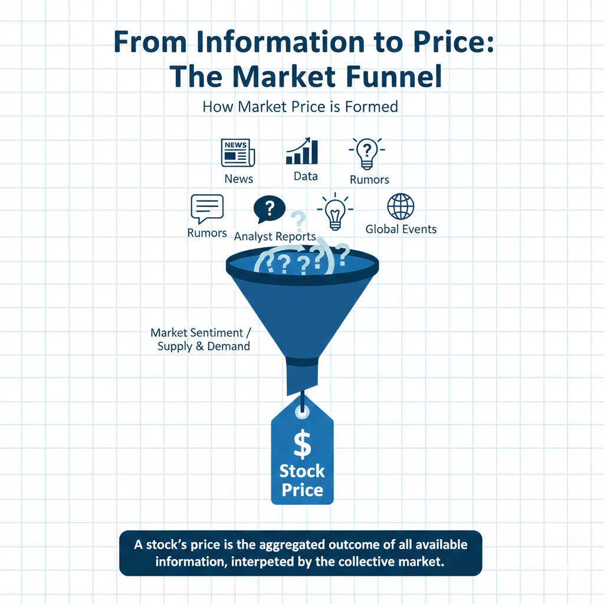
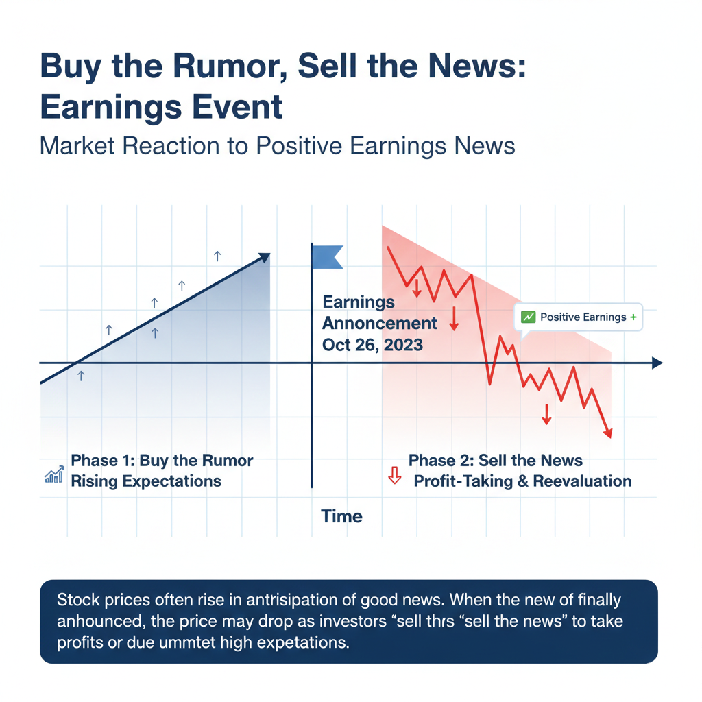
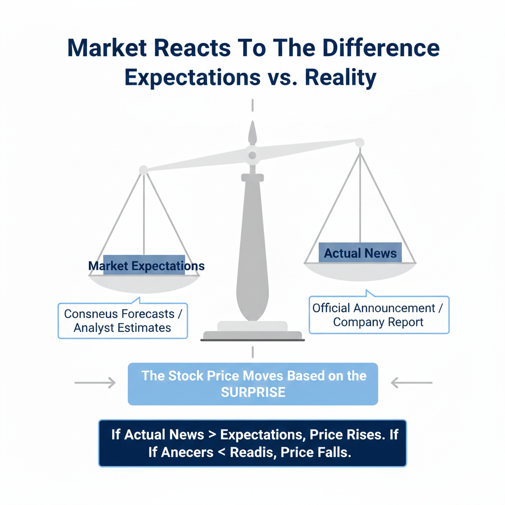

One of the most frequent sources of confusion for new investors is watching a stock price react in a way that seems completely opposite to the news. A company might announce record-breaking profits, yet its stock price falls. Conversely, a company might report a significant loss or a legal setback, only to see its share price climb. When investors ask why this happens, the most common answer they receive from professionals is: "It was already priced in."
To the uninitiated, this phrase can sound like a convenient excuse or financial jargon designed to hand-wave away market volatility. However, the concept of "pricing in" is a fundamental mechanic of how modern financial markets function. It reflects the reality that the stock market is not a real-time scoreboard of a company’s current success, but rather a forward-looking prediction engine that attempts to calculate the future value of a business long before events actually occur.
Understanding what priced in mean is a vital step in moving from a beginner to an intermediate level of financial literacy. It requires a shift in perspective—from looking at what happened yesterday to analyzing what the market expects to happen tomorrow. This article will deconstruct the mechanics of market expectations, the academic theories behind price efficiency, and why "good news" is often the catalyst for a price decline.
Table of Contents
Defining the Concept of Pricing In
In the simplest terms, when something is "priced in," it means that the current stock price already reflects the impact of a known or anticipated event. Because investors are constantly looking for an edge, they buy or sell shares based on what they think will happen in the future. By the time the event actually takes place, the buying or selling has already happened, and the price has already moved to its new logical level.
Imagine a popular technology company that is rumored to be releasing a revolutionary new product in six months. Investors don't wait until the product is on the shelves to buy the stock; they start buying immediately upon hearing the rumors. As more people buy in anticipation of future sales, the price rises. When the product is finally released, the "good news" is no longer new information. The potential profits from that product are already baked into the current valuation of the shares.
This is why the phrase what does priced in mean is so central to market analysis. It reminds us that the price we see on our screens is a composite of all public information and the collective best guesses of millions of participants. If you are hearing a piece of news for the first time on a public news outlet, there is a very high probability that institutional investors with high-speed data feeds have known about it for hours, if not days. (This concept connects with Stock Market Basics)
How Market Expectations Shape Prices
To understand the priced in stock market phenomenon, one must understand market expectations meaning. The market operates on a "consensus," which is the average expectation held by professional analysts and institutional investors. This consensus acts as a benchmark. If a company is expected to grow its revenue by a certain percentage, that growth is the baseline for the current price.
If the company eventually reports exactly that expected growth, the stock price might not move at all, or it might even drop. This is because the growth was already anticipated and accounted for in the valuation. The only way the price moves significantly higher is if the company "beats" the expectations—reporting results that are even better than what the market had already priced in. Conversely, if a company reports good profits but they are lower than what was expected, the stock will fall because the reality was worse than the expectation.
Market expectations are not just limited to earnings. They apply to everything from interest rate changes by central banks to geopolitical events and weather patterns that might affect crop prices. If the market is 90% certain that an event will happen, the price will reflect that 90% probability long before the event occurs. The movement you see on the day of the actual event is often just the final 10% adjustment.
The Efficient Market Hypothesis (EMH)
The academic backbone of the "priced in" concept is known as the Efficient Market Hypothesis. This theory suggests that share prices always incorporate and reflect all relevant information. According to the strongest version of EMH, it is impossible to consistently "beat the market" because stocks always trade at their fair value, making it impossible to find undervalued stocks or sell stocks for inflated prices.
The Three Levels of Efficiency
Economists typically divide market efficiency into three categories. "Weak" efficiency suggests that only past price data is reflected in current prices. "Semi-strong" efficiency—which most experts believe describes modern markets—suggests that all public information is immediately priced in. "Strong" efficiency goes even further, suggesting that even private or "insider" information is already reflected in the stock price due to the actions of well-informed participants.
In a semi-strong efficient market, the moment news becomes public, it is processed by millions of participants and automated algorithms. Within seconds, the "fair value" of the stock is recalculated and the price moves. This is why retail investors often feel "late" to the news; the market is simply more efficient at processing information than a single human being reading a news article. (This concept connects with Why Stock Prices Fall Even When Companies Make Profits)
Understanding Buy the Rumor, Sell the News
The "buy the rumor, sell the news" phenomenon is perhaps the most famous example of the priced-in effect. This occurs when traders buy a stock based on a rumor or an expected positive event. This buying pressure drives the price up over days or weeks. Once the event is officially confirmed, those same traders sell their shares to lock in their profits. They aren't selling because the news was bad; they are selling because the reason they bought the stock has now been realized.
Because so many people are selling at the same time to realize their gains, the increased supply of shares for sale causes the price to fall, even though the news itself was positive. To an outside observer, it looks like the stock is falling on good news. In reality, the stock is falling because the stock price expectations have already been satisfied, and the market is moving on to the next set of expectations.
When is Something Not Priced In?
If everything were always perfectly priced in, stock prices would stay relatively flat. Prices change because new, unexpected information enters the system. These are often referred to as "market shocks" or "black swan" events. A shock is an event that was not part of the market’s collective expectations, such as a sudden natural disaster, a surprise political result, or an unexpected scientific breakthrough.
Because these events were not anticipated, the market cannot price them in ahead of time. When they occur, the market undergoes a period of rapid "price discovery." This is when the price moves violently as investors scramble to figure out what the company or asset is worth in light of the new, unpredicted reality. Volatility is essentially the market's way of "pricing in" new information in real-time.
Similarly, "whisper numbers" represent a gap in pricing. Sometimes the official analyst consensus says a company will earn a certain amount, but traders "whisper" that the number will be much higher. If the company hits the official number but misses the whisper number, the stock may fall because the higher, unofficial expectation was what was actually being priced in by the most active market participants.
The Role of Analysts and Consensus Estimates
To determine what is currently priced in, investors look to analyst reports and consensus estimates. Financial institutions employ thousands of experts to model a company's future cash flows. These models are the primary drivers of stock price expectations. When an analyst upgrades a stock, they are effectively stating that they believe the market has not yet fully priced in the company's true potential.
Institutional investors control the vast majority of the money in the market. Their behavior is largely dictated by these expectations. If a large fund believes a certain economic trend is inevitable, they will move their money months in advance. By the time the event actually happens, the "damage" or "benefit" to the stock price has already occurred. For the individual learner, recognizing that the market is a consensus-driven machine helps in avoiding the trap of thinking they are the first to hear a piece of news. (This concept connects with Why Crypto Prices Move Together)
Key Takeaways
- Priced in means the current price already reflects all known and anticipated future information.
- The stock market is forward-looking; it values assets based on what will happen, not what has already happened.
- Market consensus acts as a benchmark; price movement depends on whether news "beats" or "misses" that benchmark.
- Buy the rumor, sell the news explains why prices often drop after a long-awaited positive announcement.
- Efficient Market Hypothesis suggests that public news is absorbed almost instantly, making it difficult to trade based on headlines.
- Only unexpected information (shocks) causes immediate, drastic shifts in price because it was not already accounted for.
Conclusion
The concept of "pricing in" is essential for understanding the internal logic of the stock market. It explains why the relationship between news and price movement is rarely simple and why obvious good news doesn't always lead to a profit. By acknowledging that the market is a collection of expectations, investors can better interpret the volatility they see in their portfolios.
While it can be frustrating to see a stock fall on good news, remembering that the market has already "looked ahead" can help in maintaining a calm, long-term perspective. Instead of reacting to headlines as they happen, the educated investor asks: "What did the market expect, and how does this news change that expectation?" This shift in thinking is a key component of successful financial education and helps beginners navigate the complexities of the global economy.
Educational Disclaimer:
This article is for educational and informational purposes only and should not be considered financial or investment advice. Investing involves risk.